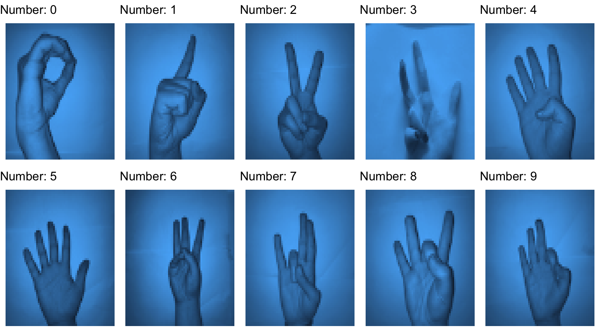
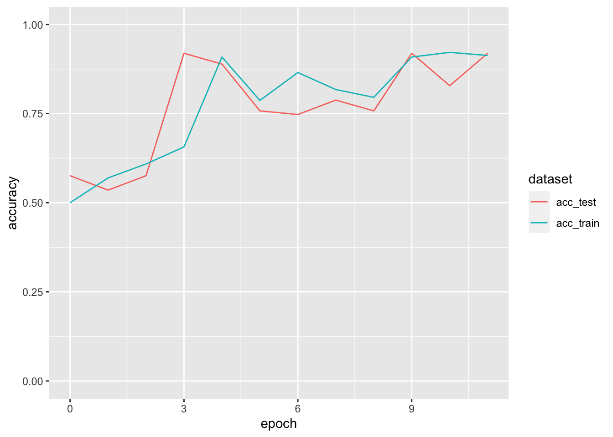
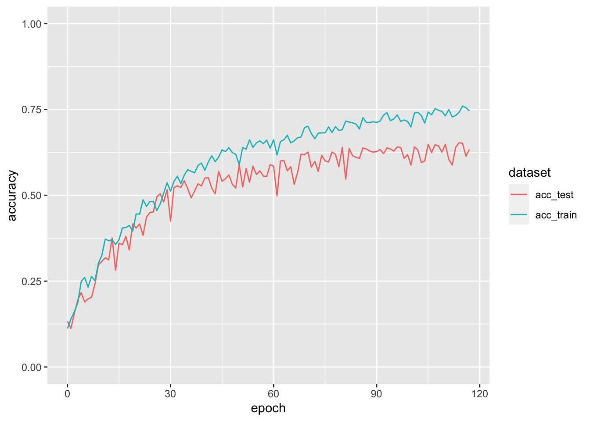
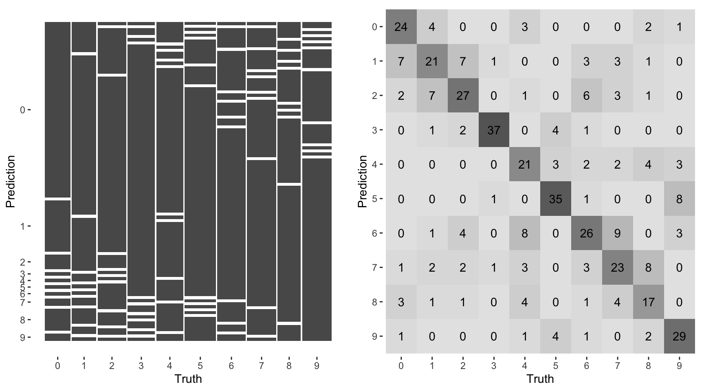
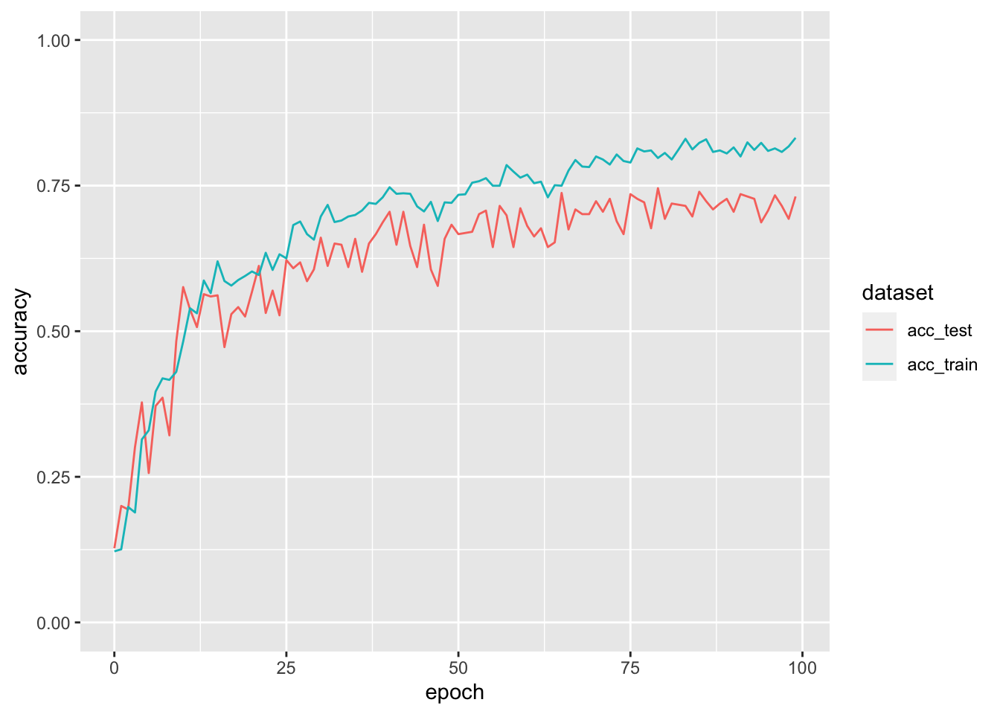
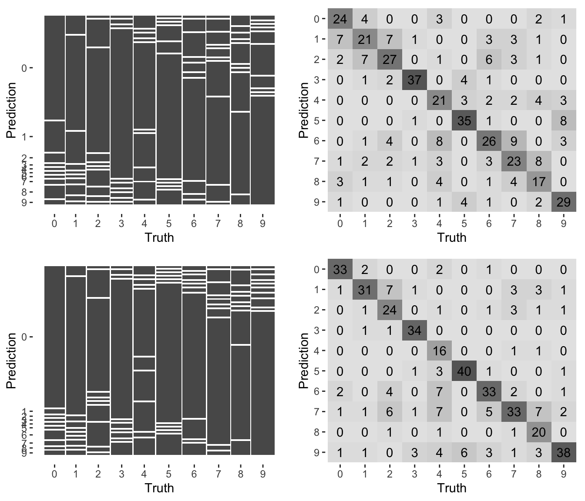

#python : clone repository to local machine
!git clone https://github.com/ardamavi/Sign-Language-Digits-Dataset.gitDeep Learning Tutorial
การเรียนรู้เชิงลึก (Deep Learning) เป็นแขนงย่อยของศาสตร์ด้านการเรียนรู้ของเครื่อง (machine learning) ที่พัฒนาขึ้นโดยใช้การทำงานของเซลล์ประสาทในสมองที่เรียกว่า neuron เป็นต้นแบบ เรียกโมเดลการเรียนรู้ดังกล่าวว่า โมเดลโครงข่ายประสาทเทียม (artificial neuron network models: ANNs)

ชุดข้อมูลที่ใช้เป็นตัวอย่าง
ชุดข้อมูลที่ใช้เป็นตัวอย่างจะใช้ชุดข้อมูล Sign Language Digits Dataset ซึ่งมีรายละเอียดเบื้องต้น ดังนี้
Image size: 100 x 100 pixels
Color space: RGB
Number of classes: 10 (Digits: 0-9)
Number of participant students: 218
Number of samples per student: 10
นำเข้าข้อมูล
ผู้วิเคราะห์สามารถดาวน์โหลดข้อมูลจาก repository ข้างต้นโดยการ Clone the repository ซึ่งอาจใช้คำสั่ง git clone บน terminal หรืออาจใช้การดาวน์โหลดโดยตรงก็ได้
เมื่อดาวน์โหลดข้อมูลเสร็จแล้ว ขั้นตอนถัดไปคือการนำเข้าข้อมูล ในตัวอย่างนี้จะนำเข้าด้วยภาษา Python
#python
import numpy as np
import os
import cv2
def load_data(data_dir):
labels = []
images = []
img_size = 64
number_list = os.listdir(data_dir)[1:11]
number_list = sorted(number_list)
for folder in number_list:
label = int(folder)
for img_file in os.listdir(os.path.join(data_dir, folder)):
img_path = os.path.join(data_dir, folder, img_file)
img = cv2.imread(img_path, cv2.IMREAD_GRAYSCALE)
img = cv2.resize(img, (img_size, img_size))
images.append(img)
labels.append(label)
return np.array(images), np.array(labels)
data_dir = 'Sign-Language-Digits-Dataset/Dataset'
images, labels = load_data(data_dir)สำรวจข้อมูลเบื้องต้น
เมื่อดำเนินการสำรวจข้อมูลเบื้องต้นพบว่า เป็นข้อมูลรูปภาพภาษามือตัวเลขจำนวน 2,062 ภาพ แต่ละภาพถูก resize ในภาษา Python ด้วย opencv ให้มีขนาด 64 x 64 แล้ว โดยจำแนกเป็นรูปภาพของตัวเลขตั้งแต่ 0 - 9 อย่างละประมาณ 204 - 208 ภาพ ดังผลการแจกแจงความถี่ด้านล่าง
library(reticulate)
# convert python array to R array and vector
images <- py$images
labels <- py$labels
dim(images)[1] 2062 64 64dim(labels)[1] 2062# frequency distribution of labels
table(labels)labels
0 1 2 3 4 5 6 7 8 9
205 206 206 206 207 207 207 206 208 204 รูปต่อไปนี้แสดงตัวอย่างภาพภาษามือที่นำเข้ามาจากการดำเนินงานข้างต้น
library(ggplot2)
library(gridExtra)
library(reshape2)
library(tidyverse)
plot_list<-list()
for (j in 1:10){
number <- melt(images[(j-1)*208+1,,] %>% t())
colnames(number)<-c("y","x","value")
## ploting
plot_list[[j]] <- ggplot(number, aes(x=y,y=-x,fill=value))+
geom_tile()+
guides(fill = "none")+
theme_void()+
labs(title = paste("Number:",j-1))
}
do.call("grid.arrange", c(plot_list, nrow=2))
Example 1: binary classification (no tuning)
ตัวอย่างแรกจะแสดงการพัฒนาโมเดลแบบ binary classification เพื่อจำแนกตัวเลข 0, 1 จากชุดข้อมูลที่นำเข้ามาในข้างต้นก่อน ดังนั้นก่อนการดำเนินการขั้นต่อไปจะคัดกรองเฉพาะข้อมูลภาพของเลข 0 และ 1 ออกมาก่อน ดังนี้
Data Preprocessing
# normalized data
X <- images[1:(205+206),,]/255
dim(X)[1] 411 64 64# create label data
y <- c(rep(0,205),rep(1,206))
# data splitting
set.seed(123)
train_id <- sample(1:411, ceiling(0.8*411))
train_x <- X[train_id,,]
train_y <- y[train_id]
test_x <- X[-train_id,,]
test_y <- y[-train_id]เมื่อสำรวจชุดข้อมูล train พบว่าในตัวอย่างนี้จะมีข้อมูลสำหรับ train โมเดลจำนวน 329 หน่วย
dim(train_x)[1] 329 64 64Modelling
ขั้นตอนต่อไปจะนำชุดข้อมูลข้างต้นมาวิเคราะห์ด้วยโมเดลการเรียนรู้ของเครื่อง 2 โมเดล ได้แก่ (1) logistic regression และ (2) artificial neural network models (ANNs) โดยทั้งสองโมเดลจะวิเคราะห์จาก library keras ทั้งหมด
ข้อมูลนำเข้าในกรณีนี้เป็นรูปภาพ ซึ่งแต่ละหน่วยข้อมูลมีลักษณะเป็นเมทริกซ์ขนาด 64 x 64 การจะนำข้อมูลดังกล่าวเข้าสู่โมเดลทั้งสองข้างต้น ผู้วิเคราะห์จำเป็นต้องแปลงข้อมูลเมทริกซ์ที่มี 2 มิติให้เป็นเวกเตอร์ที่มีมิติเดียวก่อนดังตัวอย่างในรูปด้านล่าง

จากตัวอย่างรูปจะเห็นว่า ข้อมูลนำเข้าเป็นภาพขนาด 6 x 6 เมื่อจะนำเข้าสู่โมเดลมีการแปลงให้เป็นเวกเตอร์ขนาด 36 x 1 เพื่อให้เป็น input layer ของโมเดลก่อนที่จะนำไปประมวลผลในส่วนอื่น ๆ ต่อไป จากหลักการดังกล่าวสามารถเขียน syntax ของโมเดลทั้งสองภายใต้ library keras ดังนี้
tf <- import("tensorflow")
keras <- import("keras")
## create sequential model
model_logistic <- keras$Sequential()
## add layers
### 1. flatten layer (input layer)
model_logistic$add(keras$layers$Flatten(input_shape = c(64L,64L)))
### 2. output layer
model_logistic$add(keras$layers$Dense(1, activation = "sigmoid"))ในกรณีนี้เป็นการพัฒนาโมเดลแบบ binary classification การกำหนด loss function ที่จะใช้เป็นฟังก์ชันวัตถุประสงค์สำหรับประมาณค่าพารามิเตอร์ภายในโมเดลจึงกำหนดให้เป็น binary_crossentropy ฟังก์ชันดังกล่าวเรียกอีกชื่อหนึ่งว่า log-loss ใช้สำหรับวัดความแตกต่างระหว่างค่าจริง (true value) ของตัวแปรตามแบบให้คะแนนสองค่า (0,1) กับค่าทำนายความน่าจะเป็นของแต่ละค่าคะแนน ฟังก์ชัน log-loss ดังกล่าวเขียนเป็นฟังก์ชันทางคณิตศาสตร์ได้ดังนี้
\[ L(y_i,p_i) = -[y_i \times log(p_i)+(1-y_i) \times log(1-p_i)] \]
โดยที่ \(y=0,1\) และ \(p = P(y=1)\) เมื่อ \(i=1, 2, 3, …,n\)
ในกรณีที่มีการเทรนโมเดลแบบ whole batch หรือ mini batch ฟังก์ชัน log-loss ดังกล่าวจะคำนวณได้จาก
\[ L(Y,P) = -\frac{1}{n}\sum_{i=1}^n [y_i\times log(p_i)+(1-y_i)\times log(1-p_i)] \]
ฟังก์ชัน log-loss ดังกล่าวมีคุณสมบัติที่ดีในเชิงเทคนิคกล่าวคือ เป็นฟังก์ชันต่อเนื่องและสามารถหาอนุพันธ์ได้ทุกจุด (continuous and differentiable) ซึ่งเหมาะที่จะใช้กับการประมาณค่าพารามิเตอร์ด้วยอัลกอริทึมที่อิง gradient เช่น gradient หรือ stochastic gradient descent
ส่วนการกำหนด metric สำหรับประเมินประสิทธิภาพการทำนายของโมเดลสามารถกำหนดได้หลายตัว ดังนี้
accuracyเป็นตัววัดประสิทธิภาพพื้นฐานสำหรับปัญหาแบบ classification ดังที่ได้กล่าวไปแล้วในรายวิชานี้ accuracy มีค่าเท่ากับสัดส่วนของเคสที่มีการทำนายถูกต่อจำนวนเคสทั้งหมดprecisionมีค่าเท่ากับTP/(TP+FP)เมื่อTPคือ true positive prediction และFPคือ false positive prediction เป็นกรณีเฉพาะของ accuracy ในข้อ 1. กล่าวคือใช้วัดแนวโน้มความแม่นยำในการทำนายเคสที่เป็นบวก (ในเคสที่ทำนายว่าเป็นบวกทั้งหมด สามารถทำนายเป็นบวกได้ถูกต้องเท่าใด)recallมีค่าเท่ากับTP/Pเมื่อPคือเคสที่เป็นบวกทั้งหมด ตัวชี้วัดนี้ใช้วัดประสิทธิภาพในการค้นพบหรือระบุเคสที่เป็นบวก มีค่าเท่ากับ sensitivity ที่ได้กล่าวไว้ก่อนหน้าF1-scoreเป็นค่าเฉลี่ย harmonic ระหว่างค่า precision กับ recall เป็นตัวชี้วัดที่สามารถใช้พิจารณา precision กับ recall ในภาพรวมไปพร้อม ๆ กัน F1 สามารถคำนวณได้ด้วยสูตร2*(precision*recall)/(precision + recall)
การกำหนด loss function และ metric ข้างต้นให้เป็นตัวชี้วัดประสิทธิภาพของ keras model สามารถกำหนดผ่านอาร์กิวเมนท์ loss และ metrics ภายใต้ฟังก์ชัน complie() ดังตัวอย่างต่อไปนี้
https://www.tensorflow.org/api_docs/python/tf/keras/metrics
model_logistic$compile(optimizer = "adam",
loss = "binary_crossentropy",
metrics=list('accuracy',tf$keras$metrics$Precision(name='precision')))
model_logistic$summary()ผลการกำหนดโมเดลข้างต้นจะเห็นว่ามีพารามิเตอร์ที่ต้องประมาณทั้งหมด 4,097 ตัว ซึ่งในที่นี้คือ regression coefficient ของตัวแปรอิสระแต่ละตัวใน flatten layers
การ train model สามารถทำได้โดยคำสั่งดังนี้
https://keras.io/api/callbacks/early_stopping/
set.seed(123)
## set early stopping
early_stopping <- keras$callbacks$EarlyStopping(monitor = "val_precision",
patience = 10L)
## fit the predictive model
logistic_result_notune <- model_logistic$fit(x = train_x,
y = train_y %>% as.matrix(),
validation_split = 0.3,
epochs = 500L,
callbacks = list(early_stopping))data.frame(epoch = logistic_result_notune$epoch, acc_train = logistic_result_notune$history$accuracy,
acc_test = logistic_result_notune$history$val_accuracy) %>%
gather(acc_train, acc_test, key = "dataset", value = "accuracy") %>%
ggplot(aes(x = epoch, y= accuracy, col=dataset))+
geom_line()+
scale_y_continuous(limits=c(0,1))
Model Evaluation
ขั้นตอนถัดไปคือการประเมินประสิทธิภาพการทำนายของโมเดลที่พัฒนาขึ้นในข้างต้น การประเมินประสิทธิภาพของโมเดลจะใช้ชุดข้อมูลทดสอบ ได้แก่ test_x และ test_y ซึ่งสามารถทำได้สองลักษณะ ลักษณะแรกคือใช้ฟังก์ชัน evaluate() ดังนี้
eval_result <- model_logistic$evaluate(test_x, test_y %>% as.matrix())
cat("Test loss:",eval_result[[1]], "\n")Test loss: 0.3591889 cat("Test accuracy:", eval_result[[2]], "\n")Test accuracy: 0.8780488 ผลการวิเคราะห์ข้างต้นจะเห็นว่า ความแม่นยำใน test data อยู่ในระดับที่สูงพอสมควร
ลักษณะที่สองสามารถทำได้โดยใช้ค่าทำนาย วิธีการนี้ทำให้ผู้วิเคราะห์สามารถประเมินประสิทธิภาพการทำนายในเชิงลึกได้มากขึ้น ขั้นตอนแรกคือการหาค่าทำนายของตัวแปรตามในชุดข้อมูลทดสอบก่อน ดังนี้
prob_one <- model_logistic$predict(test_x)
head(prob_one) [,1]
[1,] 0.2678992
[2,] 0.1981595
[3,] 0.2342714
[4,] 0.2208772
[5,] 0.0482427
[6,] 0.1741302pred_one <- ifelse(prob_one>0.5,1,0)
# create confusion matrix
table(pred_one, test_y) test_y
pred_one 0 1
0 40 4
1 6 32เราสามารถใช้ tidymodels มาช่วยในการวิเคราะห์ประสิทธิภาพของโมเดลบน test data ได้ดังนี้
library(tidymodels)
# calculate confusion matrix on test data
data.frame(test = factor(test_y), pred = factor(pred_one)) %>%
conf_mat(truth = test, estimate = pred) Truth
Prediction 0 1
0 40 4
1 6 32# calculate evaluation metrics from confusion matrix
data.frame(test = factor(test_y), pred = factor(pred_one)) %>%
conf_mat(truth = test, estimate = pred) %>%
summary()# A tibble: 13 × 3
.metric .estimator .estimate
<chr> <chr> <dbl>
1 accuracy binary 0.878
2 kap binary 0.754
3 sens binary 0.870
4 spec binary 0.889
5 ppv binary 0.909
6 npv binary 0.842
7 mcc binary 0.755
8 j_index binary 0.758
9 bal_accuracy binary 0.879
10 detection_prevalence binary 0.537
11 precision binary 0.909
12 recall binary 0.870
13 f_meas binary 0.889Example 2: multi-class classification
ตัวอย่างนี้จะใช้ข้อมูลทั้งหมดเพื่อพัฒนาโมเดลทำนายภาษามือของเลข 0 - 9 โดยโมเดลทำนายที่ใช้จะใช้ ANN ที่มี hidder layer 1 ชั้น โดยในโมเดลเริ่มต้นมีจำนวน hidden node เท่ากับรากที่สองของผลคูณระหว่างจำนวน input กับ output nodes ซึ่งมีค่าเท่ากับ 202.3857703 (ปัดลงเป็น 200 nodes)
Data Preprocessing
# normalized data
X <- images/255
# create label data (in one hot encoding format)
y <- data.frame(y = factor(labels)) %>%
recipe(y~., data=.) %>%
step_dummy(y, one_hot = TRUE) %>%
prep(NULL) %>%
juice()
y <- y %>% as.matrix()
colnames(y)<-as.character(0:9)
# data splitting
set.seed(123)
train_id <- sample(1:dim(X)[1], ceiling(0.8*dim(X)[1]))
train_x <- X[train_id,,]
train_y <- y[train_id,]
test_x <- X[-train_id,,]
test_y <- y[-train_id,]Modelling
คำสั่งต่อไปนี้แสดงการกำหนดโมเดล ANNs ที่ต้องการใช้งาน
keras <- import("keras")
## create sequential model
model_nn1 <- keras$Sequential()
## add layers
### 1. flatten layer (input layer)
model_nn1$add(keras$layers$Flatten(input_shape = c(64L,64L)))
### 2. hidden layer
model_nn1$add(keras$layers$Dense(units = 400,
activation = "relu"))
### 2. output layer
model_nn1$add(keras$layers$Dense(10, activation = "softmax"))
## compling
model_nn1$compile(optimizer = "adam",
loss = "categorical_crossentropy",
metrics = 'accuracy')
model_nn1$summary()categorical cross entropy
จะเห็นว่าการกำหนดโมเดลข้างต้น มีพารามิเตอร์ภายในโมเดลที่จะต้องประมาณทั้งสิ้น 821,410 ตัว และสำหรับกรณี multi-class classification จะเห็นว่ามีการใช้ loss function เป็น log-loss อีกตัวหนึ่งที่เรียกว่า categorical cross entropy ซึ่งเป็นตัวชี้วัดที่ต่อยอดขึ้นมาจาก binary cross entropy ที่กล่าวไปก่อนหน้านี้แล้ว
\[ L(y_{ij}, p_{ij}) = -\sum_{j=1}^J(y_{ij} \times log(p_{ij}) \]
โดยที่ \(y_{ij}\) เป็นค่าจริงของตัวแปรแบบจัดประเภทที่มีการให้คะแนนมากกว่าสองค่า และมีการลงรหัสแบบ one-hot encoding เมื่อ \(i\) คือหน่วยข้อมูล และ \(j\) คือประเภทของตัวแปรตาม
set.seed(123)
## set early stopping
early_stopping <- keras$callbacks$EarlyStopping(monitor = "val_loss",
patience = 10L)
## fit the predictive model
ann_result_notune <- model_nn1$fit(x = train_x,
y = train_y,
validation_split = 0.4,
epochs = 500L,
callbacks = list(early_stopping))Model Evaluation
จะเห็นว่าประสิทธิภาพที่ทำได้ไม่สูงนัก
eval_result <- model_nn1$evaluate(test_x, test_y %>% as.matrix())
cat("Test loss:",eval_result[[1]], "\n")Test loss: 1.134076 cat("Test accuracy:", eval_result[[2]], "\n")Test accuracy: 0.6310679 data.frame(epoch = ann_result_notune$epoch, acc_train = ann_result_notune$history$accuracy,
acc_test = ann_result_notune$history$val_accuracy) %>%
gather(acc_train, acc_test, key = "dataset", value = "accuracy") %>%
ggplot(aes(x = epoch, y= accuracy, col=dataset))+
geom_line()+
scale_y_continuous(limits=c(0,1))
backend <- keras$backend
## calculate predicted class
pred_prob <- model_nn1$predict(test_x)
pred_class <- apply(pred_prob, 1, which.max)-1
pred_class <- as.matrix(pred_class) # convert R array to matrix
## frequency distribution of predicted class
table(pred_class)pred_class
0 1 2 3 4 5 6 7 8 9
34 43 47 45 35 45 51 43 31 38 # create confusion matrix
test_y_class <- apply(test_y, 1, which.max)-1
test_y_class <- as.matrix(test_y_class) # convert R array to matrix
table(pred_class, test_y_class) test_y_class
pred_class 0 1 2 3 4 5 6 7 8 9
0 24 4 0 0 3 0 0 0 2 1
1 7 21 7 1 0 0 3 3 1 0
2 2 7 27 0 1 0 6 3 1 0
3 0 1 2 37 0 4 1 0 0 0
4 0 0 0 0 21 3 2 2 4 3
5 0 0 0 1 0 35 1 0 0 8
6 0 1 4 0 8 0 26 9 0 3
7 1 2 2 1 3 0 3 23 8 0
8 3 1 1 0 4 0 1 4 17 0
9 1 0 0 0 1 4 1 0 2 29true_val <- factor(test_y_class, levels=0:9)
pred_class <- factor(pred_class, levels=0:9)
eval_dat <- data.frame(true = true_val,
predict = pred_class)
p1_notune<-eval_dat %>%
conf_mat(truth = true,
estimate = predict) %>%
autoplot()
p2_notune<-eval_dat %>%
conf_mat(truth = true,
estimate = predict) %>%
autoplot("heatmap")
gridExtra::grid.arrange(p1_notune,p2_notune,ncol=2)
ผลการวิเคราะห์ข้างต้นแสดงให้เห็นว่า โมเดลทำนายภาษามือที่พัฒนาขึ้นยังมีการทำนายที่คลาดเคลื่อนในระดับหนึ่ง โดยเฉพาะการทำนายเลข 3, 5, 6, 7 และ 9
eff_notune<-eval_dat %>%
conf_mat(truth = true,
estimate = predict) %>%
summary()
eff_notune# A tibble: 13 × 3
.metric .estimator .estimate
<chr> <chr> <dbl>
1 accuracy multiclass 0.631
2 kap multiclass 0.590
3 sens macro 0.628
4 spec macro 0.959
5 ppv macro 0.632
6 npv macro 0.959
7 mcc multiclass 0.590
8 j_index macro 0.587
9 bal_accuracy macro 0.794
10 detection_prevalence macro 0.1
11 precision macro 0.632
12 recall macro 0.628
13 f_meas macro 0.628library(caret)Loading required package: lattice
Attaching package: 'caret'The following objects are masked from 'package:yardstick':
precision, recall, sensitivity, specificityThe following object is masked from 'package:purrr':
lift# Create a confusion matrix
conf_matrix <- confusionMatrix(eval_dat$true, eval_dat$predict)
# Get the classification summary
class_summary <- conf_matrix$byClass
# Print the classification summary
class_summary %>% data.frame() %>%
select(Balanced.Accuracy,Sensitivity, Specificity,
F1, Precision, Recall, Prevalence) Balanced.Accuracy Sensitivity Specificity F1 Precision
Class: 0 0.8344227 0.7058824 0.9629630 0.6666667 0.6315789
Class: 1 0.7225058 0.4883721 0.9566396 0.5250000 0.5675676
Class: 2 0.7653162 0.5744681 0.9561644 0.6000000 0.6279070
Class: 3 0.9070239 0.8222222 0.9918256 0.8705882 0.9250000
Class: 4 0.7734748 0.6000000 0.9469496 0.5526316 0.5121951
Class: 5 0.8739025 0.7777778 0.9700272 0.7692308 0.7608696
Class: 6 0.7299712 0.5098039 0.9501385 0.5473684 0.5909091
Class: 7 0.7389866 0.5348837 0.9430894 0.5287356 0.5227273
Class: 8 0.7505715 0.5483871 0.9527559 0.5151515 0.4857143
Class: 9 0.8615255 0.7631579 0.9598930 0.7073171 0.6590909
Recall Prevalence
Class: 0 0.7058824 0.08252427
Class: 1 0.4883721 0.10436893
Class: 2 0.5744681 0.11407767
Class: 3 0.8222222 0.10922330
Class: 4 0.6000000 0.08495146
Class: 5 0.7777778 0.10922330
Class: 6 0.5098039 0.12378641
Class: 7 0.5348837 0.10436893
Class: 8 0.5483871 0.07524272
Class: 9 0.7631579 0.09223301จากผลการวิเคราะห์ข้างต้น การดำเนินงานในส่วนต่อไปจะมีการปรับแต่งค่า hyperparameters ของโมเดลเพื่อเพิ่มประสิทธิภาพการทำนายให้สูงขึ้น รายละเอียดจะแสดงในหัวข้อถัดไป
Regularized Techniques
ในทำนองเดียวกับการพัฒนาโมเดลทำนายด้วยอัลกอริทึมการเรียนรู้ของเครื่องอื่น ๆ ปัญหา overfitting และ underfitting เป็นสิ่งที่ผู้วิเคราะห์จำเป็นต้องพิจารณาและ trace-off เพื่อให้โมเดลทำนายมีประสิทธิภาพสูงที่สุดเท่าที่จะเป็นไปได้

รูปด้านบนเรียกว่า trace plot หรือ learning curves แผนภาพนี้ใช้สารสนเทศเกี่ยวกับการเรียนรู้ของโมเดล โดยปกติ learning curve อาจจำแนกได้เป็นสองประเภทได้แก่
loss learning curve แผนภาพนี้มีแกน Y เป็นค่าของ loss function และแกน X เป็น epoch โมเดลที่เรียนรู้ได้อย่างไม่มีปัญหาจะมีแนวโน้มของ loss learning curve ที่ลดลงเมื่อจำนวน epoch เพิ่มขึ้น และเมื่อ loss function ลดลงถึงค่าหนึ่งก็จะมีแนวโน้มคงที่ แสดงถึงการลู่เข้าของโมเดล อย่างไรก็ตามโมเดลที่มี loss learning curve ลักษณะดังกล่าวไม่จำเป็นต้องเป็นโมเดลที่ดีที่สุด ต้องพิจารณาระดับของ loss function ประกอบด้วย
accuracy learning curve แผนภาพนี้มีลักษณะคล้ายกับ loss learning curve แต่ตรงกันข้ามกัน แกน Y ของแผนภาพเป็นค่าความแม่นยำหรือ accuracy ส่วนแกน X เป็น epoch ในโมเดลที่เรียนรู้ได้อย่างปกติแผนภาพดังกล่าวจึงจะมีแนวโน้มเพิ่มขึ้นเมื่อจำนวน epoch เพิ่มขึ้น และแนวโน้มการเพิ่มขึ้นดังกล่าวจะดำเนินไประยะหนึ่งค่า accuracy ของโมเดลก็จะมีแนวโน้มคงที่
การประเมินการเรียนรู้ของโมเดลมัก plot แผนภาพข้างต้น โดยเปรียบเทียบกันระหว่างพล็อตของชุดข้อมูลฝึกหัด และชุดข้อมูลตรวจสอบ (validation data) แนวโน้มของ learning curve จากชุดข้อมูลทั้งสองจะช่วยให้ผู้วิเคราะห์สามารถประเมิน overfiting ของโมเดลได้ โมเดลที่ validation learning curve มีแนวโน้มให้ค่าแตกต่างจาก training learning curve บ่งชี้ว่าเป็นโมเดลที่มีการระบุเกินพอดี (overfitting model) กล่าวคือโมเดลดังกล่าวไม่สามารถใช้งานได้ดีในชุดข้อมูลที่ไม่เคยรู้จักมาก่อน แม้ว่าจะเป็นชุดข้อมูลที่ได้จากประชากรเดียวกันก็ตาม อย่างไรก็ตามในการประเมิน learning curve ของโมเดล ผู้วิเคราะห์ควรกำหนดจำนวน epoch ให้มากเพียงพอเพื่อรับประกันได้ว่าแนวโน้มที่พบนั้นถูกต้องน่าเชื่อถือแล้ว
regularization เป็นเทคนิคที่ใช้สำหรับป้องกันหรือลดทอนปัญหา overfitting ของ ANN models เหมือนกับโมเดลการเรียนรู้ของเครื่องอื่น ๆ หลักการของเทคนิค regularization ในการพัฒนาโมเดล ANNs เหมือนกับโมเดลการเรียนรู้ของเครื่องที่ได้กล่าวมาในรายวิชานี้ กล่าวคือเป็นเทคนิคที่พยายามเพิ่ม biased ให้กับโมเดลทำนาย เพื่อลดความแปรปรวนของโมเดลลง
regularzation ใน ANNS มีหลายวิธีการดังนี้
L1 regularization (หรือ Lasso regularization)
เป็นวิธีการที่เหมือนกับ LASSO regression กล่าวคือวิธีการนี้จะเพิ่ม penalty term ไว้ใน loss function โดย penalty term ดังกล่าวเป็นฟังก์ชันค่าสัมบูรณ์ของค่าน้ำหนักหรือพารามิเตอร์ใน ANNs ดังนี้
\[ Loss_{LASSO} = Loss_{original} + \lambda \sum_{i=1}^p |w_i| \]
เมื่อ \(w_i\) คือ weight ของ ANNs และ \(\lambda\) คือ regularized parameter ผลลัพธ์ที่ได้จากวิธีการนี้จะปรับค่าน้ำหนักบางตัวภายในโมเดลให้มีค่าเป็น 0 กล่าวคือเป็นเทคนิคสำหรับลดทอน feature ที่ใช้ในการประมวลผลภายในโมเดล
L2 regularization (หรือ Ridge regularization)
เป็นวิธีที่มีหลักการเดียวกับ LASSO แต่ penalty term จะเป็นฟังก์ชันกำลังสองของค่าน้ำหนัก ดังนี้
\[ Loss_{ridge} = Loss_{original} + \lambda/2 \sum_{i=1}^p w_i^2 \]
เมื่อ \(\lambda\) คือ regularized parameter ซึ่งอาจเรียกว่าค่าคงที่ ridge ผลลัพธ์ที่ได้จากวิธีการนี้จะปรับค่าน้ำหนักบางตัวภายในโมเดลให้มีค่าน้อยลงเข้าใกล้ 0 ซึ่งทำให้ค่าประมาณน้ำหนักรวมทั้งค่าทำนายที่ได้จากโมเดลมีความเสถียรมากขึ้น วิธีการนี้มีความแตกต่างจาก L1 คือไม่ใช่วิธีลดทอนจำนวน feature ที่ใช้ในการประมวลผล แต่จะเป็นการลดความสำคัญหรือบทบาทของ feature ในการประมวลผลลง
การทำ L1 และ L2 regularization ด้วย keras สามารถทำได้โดยกำหนดพารามิเตอร์ kernel_regularizer = l1(lambda) หรือ kernel_regularizer = l2(lambda) ดังตัวอย่างต่อไปนี้
import keras
from keras.layers import Dense
from keras.regularizers import l1
model = keras.Sequential()
# Add a dense layer with L1 regularization
model.add(Dense(units=64, activation='relu', input_dim=100,
kernel_regularizer=l1(0.01))) # 0.01 is the regularization strength (lambda)
# Add more layers as needed...การทำ L1 และ L2 regularization ใน keras สามารถเลือกทำได้ 3 แบบได้แก่ ทำ regularization ที่พารามิเตอร์ weight, bias และ output รายละเอียดมีดังนี้ (1) kernel_regularizer ใช้สำหรับทำ regularization ที่พารามิเตอร์น้ำหนัก (ใน keras เรียกว่า kernel) ของ layer ที่กำหนด ผู้วิเคราะห์สามารถเลือกได้ว่าจะทำ regularization แบบ L1 หรือ L2 หรือเลือกทำทั้งสองแบบร่วมกัน (เรียกว่า elastic-net) (2) bias_regularizer ใช้สำหรับทำ regularization บนพารามิเตอร์ bias หรือ intercept ของโมเดล และ (3) activity_regularizer ใช้สำหรับทำ regularization ที่ output ของ activation ในแต่ละ layer การ regularization ประเภทนี้มี concept เดียวกับสองประเภทแรก แต่ penalty term ที่ใช้จะเห็น output ที่ได้จาก activation function ของ neuron ในแต่ละ layer โดย loss function สำหรับกรณีนี้เขียนได้ดังนี้ \(Loss_{activity} = Loss_{original}+\lambda R(\sigma(x))\) โดยที่ \(R(.)\) คือ regularization ที่กำหนดให้กับ activation \(\sigma(x)\)
ตัวอย่างคำสั่งต่อไปนี้ใช้แสดงการทำ regularization ทั้งสามประเภทร่วมกับบน layer ที่กำหนด
from keras.layers import Dense
from keras.regularizers import L1L2
# Create a L1L2 regularizer with both L1 and L2 regularization
reg = L1L2(l1=0.01, l2=0.01)
# Add a Dense layer with kernel, bias, and activity regularization
layer = Dense(64, activation='relu', kernel_regularizer=reg, bias_regularizer=reg, activity_regularizer=reg)Dropout
เป็นวิธีการ regularization เฉพาะสำหรับโมเดลโครงข่ายประสาทเทียม วิธีการนี้จะสุ่ม neuron ภายใน layer เป็นจำนวนเท่ากับร้อยละที่กำหนดออกจากโมเดล (จริง ๆ คือกำหนดให้ weight ที่ออกจาก neuron ตัวที่ถูกสุ่มมีค่าเท่ากับ 0) ซึ่งทำให้ neuron ดังกล่าวจะไม่มีส่วนในการประมวลผล ซึ่งช่วยลดการเรียนรู้ที่ซ้ำซ้อน (redundant learning) ในทางกลับกันคือช่วยเพิ่มความเป็นอิสระในการเรียนรู้ของแต่ละ neuron ที่เหลืออยู่ สภาพดังกล่าวเป็นการช่วยเพิ่มความแกร่งและประสิทธิภาพในการทำนายให้กับโมเดล

การทำ dropout ใน keras สามารถทำได้โดยเพิ่ม layer Dropout ต่อจาก layer ที่ต้องการ ดังตัวอย่างต่อไปนี้
import keras
from keras.layers import Dense, Dropout
model = keras.Sequential()
# Add an input dense layer
model.add(Dense(units=64, activation='relu', input_dim=100))
# Add a dropout layer with a dropout rate of 0.5
model.add(Dropout(rate=0.5))
# Add more layers as needed
model.add(Dense(units=32, activation='relu'))
# Add another dropout layer
model.add(Dropout(rate=0.5))
# Add the output layer
model.add(Dense(units=10, activation='softmax'))จากตัวอย่างคำสั่งข้างต้นจะเห็นว่าในฟังก์ชัน Dropout() มีการกำหนดพาารามิเตอร์ rate ซึ่งมีค่าเท่ากับสัดส่วนของ neuron ภายใน layer ที่จะสุ่มเพื่อตัดออกจากโมเดล ทั้งนี้ค่าสัดส่วนดังกล่าวต้องกำหนดให้มีค่าอยู่ในช่วง [0,1]
โดยปกติมักมีการใช้เทคนิค L1 และ L2 Regularization และ Dropout ควบคู่กัน ซึ่งจะใช้เพิ่มประสิทธิภาพการทำนายของโมเดลในด้านความเป็นนัยทั่วไปของโมเดลให้สูงขึ้น ทั้งนี้เป็นเพราะ L1,L2 กับ Dropout เป็นวิธีการ regularization ที่มีวัตถุประสงค์ที่แตกต่างกัน กล่าวคือ Dropout เน้นการสร้างโมเดลที่ทำให้ neuron แต่ละตัวให้มีการเรียนรู้ที่เป็นอิสระกัน ในขณะที่ L1 เป็นเทคนิคสำหรับคัดเลือกตัวแปร ส่วน L2 ช่วยเพิ่มความเสถียรในการประมาณค่าพารามิเตอร์ของโมเดล การใช้เทคนิคทั้งสามร่วมกันจึงช่วยให้การปรับแต่งค่า hyperparameters ของโมเดลสามารถทำได้อย่างมีประสิทธิภาพสูงขึ้น ซึ่งมีผลโดยตรงต่อการเพิ่มประสิทธิภาพการทำนายของโมเดล
Early stopping
เป็นเทคนิคการควบคุมการเรียนรู้ของโมเดลไม่ให้เรียนรู้ด้วยจำนวน epoch ที่มากเกินไป เกณฑ์การพิจารณาหยุดจะพิจารณาจากการเปลี่ยนแปลงของค่า validation loss กล่าวคือ หากค่า validation loss ไม่มีการเปลี่ยนแปลงเกินกว่าจำนวน epoch ที่กำหนด โมเดลจะหยุดการประมาณค่าพารามิเตอร์ วิธีการนี้จึงช่วยให้โมเดลหยุดกระบวนการก่อนที่จะนำ noise ในข้อมูลไปเรียนรู้ การทำ earlystopping ใน keras สามารถดำเนินการได้ดังนี้
import keras
from keras.layers import Dense
from keras.callbacks import EarlyStopping
# model specification
model = keras.Sequential()
model.add(Dense(units=64, activation='relu', input_dim=100))
model.add(Dense(units=32, activation='relu'))
model.add(Dense(units=10, activation='softmax'))
# compling
model.compile(optimizer='adam', loss='categorical_crossentropy', metrics=['accuracy'])
# configure the EarlyStopping callback
early_stopping = EarlyStopping(monitor='val_loss', patience=3, verbose=1, mode='auto')
# model fitting with the EarlyStopping callback
model.fit(X_train, y_train, validation_split=0.2, epochs=100, batch_size=32, callbacks=[early_stopping])Weight constraints
เป็นวิธีการควบคุมการเรียนรู้ของโมเดลด้วยการกำหนดเงื่อนไขหรือช่วงจำกัดให้กับขนาดของพารามิเตอร์น้ำหนัก เพื่อไม่ให้ค่าน้ำหนักดังกล่าวมีค่ามากเกินไป การควบคุมดังกล่าวทำให้โมเดลมีความแกร่งต่อการความผันแปรที่เกิดขึ้นในข้อมูลนำเข้ามากขึ้น ซึ่งจะทำให้ค่าทำนายของโมเดลมีความเสถียรมากขึ้น และลดปัญหา overfitting ลง การทำ weight constraint ดังกล่าวสามารถทำได้โดยกำหนดผ่านพารามิเตอร์ kernel_constraint ภายในฟังก์ชัน Dense() ดังตัวอย่างต่อไปนี้
from keras.models import Sequential
from keras.layers import Dense
from keras.constraints import MaxNorm
# Create a model
model = Sequential()
# Add layers with weight constraints
model.add(Dense(64, input_shape=(input_dim,), activation='relu', kernel_constraint=MaxNorm(max_value=2, axis=0)))
model.add(Dense(32, activation='relu', kernel_constraint=MaxNorm(max_value=2, axis=0)))
model.add(Dense(num_classes, activation='softmax'))
# Compile the model
model.compile(optimizer='adam', loss='categorical_crossentropy', metrics=['accuracy'])จากตัวอย่างข้างต้นจะเห็นว่ามีการกำหนดให้ kernel_constraint=MaxNorm(max_value=2, axis=0) ซึ่งหมายถึงยอมให้ขนาดของ weight ภายใน layer ที่กำหนดมีค่าไม่เกิน 2
Batch normalization
โดยปกติการเรียนรู้ของ DL model จะมีการ normalize ข้อมูลนำเข้าที่อยู่ใน input layer เพื่อข้อมูลนำเข้าในแต่ละ neuron อยู่ภายใต้สเกลเดียวกัน ซึ่งช่วยให้การเรียนรู้ของ layer ที่อยู่ถัดจาก input สามารถเรียนรู้ได้อย่างมีประสิทธิภาพ อย่างไรก็ตามเมื่อโมเดลเรียนรู้ไประยะนึง การแจกแจงของ input สำหรับในแต่ละ hidden layer จะมีแนวโน้มเปลี่ยนแปลงไปเรื่อย ๆ เรียกปรากฏการณ์นี้ว่า internal covariate shift และอาจมีความแตกต่างกันมากจนทำให้ประสิทธิภาพในการประมาณค่าพารามิเตอร์ลดลง และการลู่เข้าของโมเดลทำได้ช้า หรือต้องใช้เวลาประมวลผลในแต่ละรอบมากกว่าปกติ จากปัญหาดังกล่าวจึงมีการเสนอให้ทำ batch normalization (Loffe, & Szegedy, 2015) หลักการของวิธีการนี้คือแทนที่จะ normalize เฉพาะข้อมูลใน input layer อย่างเดียว ก็เปลี่ยนมา normalized input ของทุก hidden layer ภายในโมเดล ทั้งนี้เพื่อปรับสเกลของ output ของแต่ละ neuron ใน hidden layer ให้เป็นมาตรฐาน ขั้นตอนของ batch normalization คร่าว ๆ มีดังนี้
กำหนดให้ M เป็นโมเดล ANNs และ \(x_i\) คือข้อมูลนำเข้าหรือผลลัพธ์ที่ได้จาก neuron
- คำนวณ mini-batch mean ดังนี้ \(\mu_B = (1/N)\sum_{i=1}^Nx_i\) สำหรับ \(i=1,2,3,…,N\) และ \(N\) คือจำนวนหน่วยข้อมูลภายใน mini-batch
- คำนวณ mini-batch variance ดังนี้ \(\sigma^2_B = (1/N) \sum_{i=1}^N (x_i-\mu_B)^2\)
- คำนวณค่ามาตรฐานของแต่ละ neuron (หนังสือบางเล่มเรียกว่า activations) ค่ามาตรฐานดังกล่าวมีค่าเท่ากับ \(\hat{x} = \frac{x_i-\mu_B}{\sqrt{\sigma^2_B + \epsilon}}\) เมื่อ \(\epsilon\) เป็นค่าคงที่ที่มีค่าเป็นบวกและมีค่าใกล้ 0 เพื่อช่วยให้เทอมส่วนของสูตรคะแนนมาตรฐานไม่เข้าใกล้ 0 มากเกินไป โดยปกติมักกำหนดค่าคงที่ดังกล่าวไว้ในช่วง \([10^{-10}, 10^{-8}]\) และเรียก \(\hat{x_i}\) ว่า normalization activation
- ปรับสเกลของ normalization activation เพื่อให้มีความสอดคล้องกับธรรมชาติของข้อมูล ดังนี้ \(y_i=\gamma \hat{x}_i +\beta\) เรียก \(y_i\) ว่า final batch-normalized activation และเรียก \(\gamma\) และ \(\beta\) ว่า พารามิเตอร์ learned scaling และ shifting ตามลำดับ พารามิเตอร์ทั้งสองนี้หาได้จากกระบวนการ backpropagation กล่าวคือ เมื่อเริ่ม forward propagation ในรอบแรกจะกำหนดค่าพารามิเตอร์ทั้งสองนี้ด้วยค่าเริ่มต้น ซึ่งโดยมากมักกำหนดให้มีค่าเท่ากับ 1 และ 0 ตามลำดับ จากนั้นกระบวน backpropagation จะปรับค่าพารามิเตอร์ทั้งสองเหมือนกับพารามิเตอร์น้ำหนักในโมเดล
การทำ batch normallization ใน keras สามารถทำได้ดังตัวอย่างคำสั่งต่อไปนี้
from keras.models import Sequential
from keras.layers import Dense, BatchNormalization, Activation
# Create a model
model = Sequential()
# Add input layer
model.add(Dense(64, input_shape=(input_dim,)))
# Add batch normalization layer !!!
model.add(BatchNormalization())
# Add activation function
model.add(Activation('relu'))
# Add hidden layer
model.add(Dense(32))
# Add batch normalization layer !!!
model.add(BatchNormalization())
# Add activation function
model.add(Activation('relu'))
# Add output layer
model.add(Dense(num_classes, activation='softmax'))
# Compile the model
model.compile(optimizer='adam', loss='categorical_crossentropy', metrics=['accuracy'])Example 3: Hyperparameter Tuning
จากตัวอย่างที่ 2 จะเห็นว่าโมเดลทำนายที่พัฒนาขึ้นยังมีประสิทธิภาพการทำนายที่ไม่สูงนัก ในเชิงปฏิบัติผู้วิเคราะห์สามารถเพิ่มประสิทธิภาพของโมเดลทำนายดังกล่าวได้โดยใช้การปรับแต่งค่า hyperparameters โดยในโมเดลโครงข่ายประสาทเทียม มี hyperparameters ที่สามารถปรับ
การปรับแต่งค่า hyperparameters ในโมเดลโครงข่ายประสาทเทียม (neural network models) เป็นขั้นตอนสำคัญของการพัฒนาโมเดลการเรียนรู้เชิงลึก hyperparameters ของ neural network models มีหลายตัว ได้แก่ จำนวน hidden layer จำนวน node ภายในแต่ละ layer ระดับของ learning rate ขนาดของ batch, activation function รวมไปถึงเทคนิค regulaization ที่เลือกใช้
ตัวอย่างนี้จะแสดงการปรับแต่งค่า hyperparameter พร้อมทั้งใช้เทคนิค regularization เพื่อเพิ่มประสิทธิภาพการทำนายของโมเดล โดยเป็นการดำเนินการต่อจากตัวอย่าง 2
Setup
ก่อนการดำเนินการใด ๆ ผู้วิเคราะห์จำเป็นต้องติดตั้งและเตรียมสภาพแวดล้อมการทำงานให้พร้อมก่อน ได้แก่ การติดตั้ง tensorflow, keras และ keras-tuner ดังนี้
#terminal
pip install tensorflow
pip install keras
pip install keras-tunerจากนั้นติดตั้งและเรียก reticulate
Data preprocessing
ทำเหมือนกับตัวอย่างที่ผ่านมา
# normalized data
X <- images/255
# create label data (in one hot encoding format)
y <- data.frame(y = factor(labels)) %>%
recipe(y~., data=.) %>%
step_dummy(y, one_hot = TRUE) %>%
prep(NULL) %>%
juice()
y <- y %>% as.matrix()
# data splitting
set.seed(123)
train_id <- sample(1:dim(X)[1], ceiling(0.8*dim(X)[1]))
train_x <- X[train_id,,]
train_y <- y[train_id,]
test_x <- X[-train_id,,]
test_y <- y[-train_id,]Modelling
ขั้นแรกคือนำเข้า library ต่าง ๆ ที่จำเป็นทั้งหมด
import numpy as np
import tensorflow as tf
from tensorflow import keras
from tensorflow.keras import layers
from kerastuner.tuners import RandomSearchสร้างฟังก์ชันของ ANNs model เพื่อใช้สำหรับทำ hyperparameter tuning ฟังก์ชันดังกล่าวจะต้องมีอาร์กิวเมนท์ hp เพื่อใช้กำหนดการปรับแต่งค่า hyperparameter ดังกล่าว ทั้งนี้จะใช้โครงของโมเดลใน example 2 เป็นหลัก
Model and hyperparameters space
# defined model
def build_model(hp):
model = keras.Sequential()
model.add(layers.Flatten(input_shape=(64, 64)))
# Tune the number of hidden layers
hp_num_layers = hp.Int('num_layers', min_value=1, max_value=1, step=1)
for i in range(hp_num_layers):
# Tune the number of units in the Dense layer
hp_units = hp.Int('units_' + str(i), min_value=600, max_value=3000, step=200)
# Tune the L1 regularization factor
#hp_l1 = hp.Float('l1_' + str(i), min_value=0, max_value=0.1, step=0.01)
# Tune the L2 regularization factor
hp_l2 = hp.Float('l2_' + str(i), min_value=0, max_value=0.1, step=0.01)
model.add(layers.Dense(units=hp_units, kernel_regularizer=keras.regularizers.l2(l2=hp_l2)))
model.add(layers.Activation('relu'))
# Tune the dropout rate
#hp_dropout = hp.Float('dropout_' + str(i), 0, 0.2, step=0.1)
#model.add(layers.Dropout(hp_dropout))
model.add(layers.Dense(10, activation='softmax'))
# Tune the learning rate
hp_learning_rate = hp.Choice('learning_rate', values=[1e-2, 1e-3, 1e-4])
model.compile(optimizer=keras.optimizers.Adam(learning_rate=hp_learning_rate),
loss='categorical_crossentropy',
metrics=['accuracy'])
return modeltuner = RandomSearch(
build_model,
objective='val_accuracy',
max_trials=20,
executions_per_trial=3,
directory='my_dir3',
project_name='signal_tuning_regularization')tuner.search_space_summary()Search space summary
Default search space size: 4
num_layers (Int)
{'default': None, 'conditions': [], 'min_value': 1, 'max_value': 1, 'step': 1, 'sampling': 'linear'}
units_0 (Int)
{'default': None, 'conditions': [], 'min_value': 600, 'max_value': 3000, 'step': 200, 'sampling': 'linear'}
l2_0 (Float)
{'default': 0.0, 'conditions': [], 'min_value': 0.0, 'max_value': 0.1, 'step': 0.01, 'sampling': 'linear'}
learning_rate (Choice)
{'default': 0.01, 'conditions': [], 'values': [0.01, 0.001, 0.0001], 'ordered': True}Tune Grids
train_x = r.train_x
train_y = r.train_y
# Set early stopping
early_stopping=keras.callbacks.EarlyStopping(monitor = "val_accuracy", patience = 10,
min_delta = 0,
baseline=0.5,
mode='auto')
tuner.search(train_x, train_y,
epochs=50,
validation_split=0.3,
batch_size = 300,
callbacks = [early_stopping],
verbose=False
)best_hp = tuner.get_best_hyperparameters(num_trials=1)[0]
best_model = tuner.hypermodel.build(best_hp)
best_model.summary()Model: "sequential_2"
_________________________________________________________________
Layer (type) Output Shape Param #
=================================================================
flatten_2 (Flatten) (None, 4096) 0
dense_3 (Dense) (None, 2200) 9013400
activation (Activation) (None, 2200) 0
dense_4 (Dense) (None, 10) 22010
=================================================================
Total params: 9,035,410
Trainable params: 9,035,410
Non-trainable params: 0
_________________________________________________________________Last fit
best_model <- py$best_model
best_model_fit<-best_model$fit(train_x, train_y,
epochs = 100L,
validation_split = 0.3,
batch_size = 256L,
callbacks = list(early_stopping)
)data.frame(epoch = best_model_fit$epoch, acc_train = best_model_fit$history$accuracy,
acc_test = best_model_fit$history$val_accuracy) %>%
gather(acc_train, acc_test, key = "dataset", value = "accuracy") %>%
ggplot(aes(x = epoch, y= accuracy, col=dataset))+
geom_line()+
scale_y_continuous(limits=c(0,1))
Model Evaluation
backend <- keras$backend
## calculate predicted class
pred_prob <- best_model$predict(test_x)
pred_class <- apply(pred_prob, 1, which.max)-1
pred_class <- as.matrix(pred_class) # convert R array to matrix
## frequency distribution of predicted class
table(pred_class)pred_class
0 1 2 3 4 5 6 7 8 9
38 47 32 36 18 46 49 63 23 60 # create confusion matrix
test_y_class <- apply(test_y, 1, which.max)-1
test_y_class <- as.matrix(test_y_class) # convert R array to matrix
table(pred_class, test_y_class) test_y_class
pred_class 0 1 2 3 4 5 6 7 8 9
0 33 2 0 0 2 0 1 0 0 0
1 1 31 7 1 0 0 0 3 3 1
2 0 1 24 0 1 0 1 3 1 1
3 0 1 1 34 0 0 0 0 0 0
4 0 0 0 0 16 0 0 1 1 0
5 0 0 0 1 3 40 1 0 0 1
6 2 0 4 0 7 0 33 2 0 1
7 1 1 6 1 7 0 5 33 7 2
8 0 0 1 0 1 0 0 1 20 0
9 1 1 0 3 4 6 3 1 3 38true_val <- factor(test_y_class)
pred_class <- factor(pred_class, levels=0:9)
eval_dat <- data.frame(true = true_val,
predict = pred_class)
p1_tune<-eval_dat %>%
conf_mat(truth = true,
estimate = predict) %>%
autoplot()
p2_tune<-eval_dat %>%
conf_mat(truth = true,
estimate = predict) %>%
autoplot("heatmap")
gridExtra::grid.arrange(p1_notune, p2_notune,p1_tune,p2_tune,ncol=2)
eff_tune<-eval_dat %>%
conf_mat(truth = true,
estimate = predict) %>%
summary()
eff_tune# A tibble: 13 × 3
.metric .estimator .estimate
<chr> <chr> <dbl>
1 accuracy multiclass 0.733
2 kap multiclass 0.703
3 sens macro 0.731
4 spec macro 0.970
5 ppv macro 0.768
6 npv macro 0.971
7 mcc multiclass 0.706
8 j_index macro 0.701
9 bal_accuracy macro 0.851
10 detection_prevalence macro 0.1
11 precision macro 0.768
12 recall macro 0.731
13 f_meas macro 0.730library(caret)
# Create a confusion matrix
conf_matrix <- confusionMatrix(eval_dat$true, eval_dat$predict)
# Get the classification summary
class_summary <- conf_matrix$byClass
# Print the classification summary
class_summary %>% data.frame() %>%
select(Balanced.Accuracy,Sensitivity, Specificity,
F1, Precision, Recall, Prevalence) Balanced.Accuracy Sensitivity Specificity F1 Precision
Class: 0 0.9275260 0.8684211 0.9866310 0.8684211 0.8684211
Class: 1 0.8215681 0.6595745 0.9835616 0.7380952 0.8378378
Class: 2 0.8500000 0.7500000 0.9500000 0.6400000 0.5581395
Class: 3 0.9642435 0.9444444 0.9840426 0.8947368 0.8500000
Class: 4 0.9127186 0.8888889 0.9365482 0.5423729 0.3902439
Class: 5 0.9265859 0.8695652 0.9836066 0.8695652 0.8695652
Class: 6 0.8215832 0.6734694 0.9696970 0.7096774 0.7500000
Class: 7 0.7461454 0.5238095 0.9684814 0.6168224 0.7500000
Class: 8 0.9155024 0.8695652 0.9614396 0.6896552 0.5714286
Class: 9 0.8081439 0.6333333 0.9829545 0.7307692 0.8636364
Recall Prevalence
Class: 0 0.8684211 0.09223301
Class: 1 0.6595745 0.11407767
Class: 2 0.7500000 0.07766990
Class: 3 0.9444444 0.08737864
Class: 4 0.8888889 0.04368932
Class: 5 0.8695652 0.11165049
Class: 6 0.6734694 0.11893204
Class: 7 0.5238095 0.15291262
Class: 8 0.8695652 0.05582524
Class: 9 0.6333333 0.14563107แนวทางการปรับแต่งค่า hyperparameter
วิเคราะห์ baseline model ด้วยค่าเริ่มต้นที่ makesense ก่อน การกำหนดค่าเริ่มต้นต่าง ๆ ให้กับ hyperparameter ในโมเดลอาจใช้บริบทของข้อมูล และ rule of thumb ประกอบกัน การวิเคราะห์ในขั้นตอนนี้จะทำให้ผู้วิเคราะห์ได้จุดอ้างอิงสำหรับการปรับแต่งโมเดลต่อไป
ทำ random grid search หรือวิธีการ grid search อื่น ๆ ที่เหมาะสม เพื่อค้นหา combination ของ hyperparameter ที่มีแนวโน้มทำให้โมเดลจะมีประสิทธิภาพการทำนายสูงที่สุด
พิจารณาว่า hyperparameter ตัวไหนที่มีผลกระทบต่อประสิทธิภาพของโมเดลมาก การปรับแต่งในรอบถัดไปให้ focus ที่ hyperparameter ตัวนั้นมาก ๆ
ปรับแต่งการทำ grid search ในข้อ 2 ให้ละเอียดมากขึ้น บริเวณที่ประสิทธิภาพการทำนายของโมเดลสูง เพื่อให้ได้ค่า hyperparameter ที่เหมาะสมมากที่สุด
พยายามใช้ early stopping เพื่อป้องกันการเกิด overfitting ระหว่างการ train และช่วยลดทรัพยากรที่ต้องใช้ในการประมวลผล
กระบวนการทั้งหมดอาจจะต้องมีการทวนซ้ำหลายรอบจนกระทั่งได้ผลลัพธ์ที่ลงตัวมากที่สุด
อ้างอิง
- Kyle Krafka, Aditya Khosla, Petr Kellnhofer, Harini Kannan, Suchi Bhandarkar, Wojciech Matusik and Antonio Torralba. “Eye Tracking for Everyone”. IEEE Conference on Computer Vision and Pattern Recognition (CVPR), 2016.